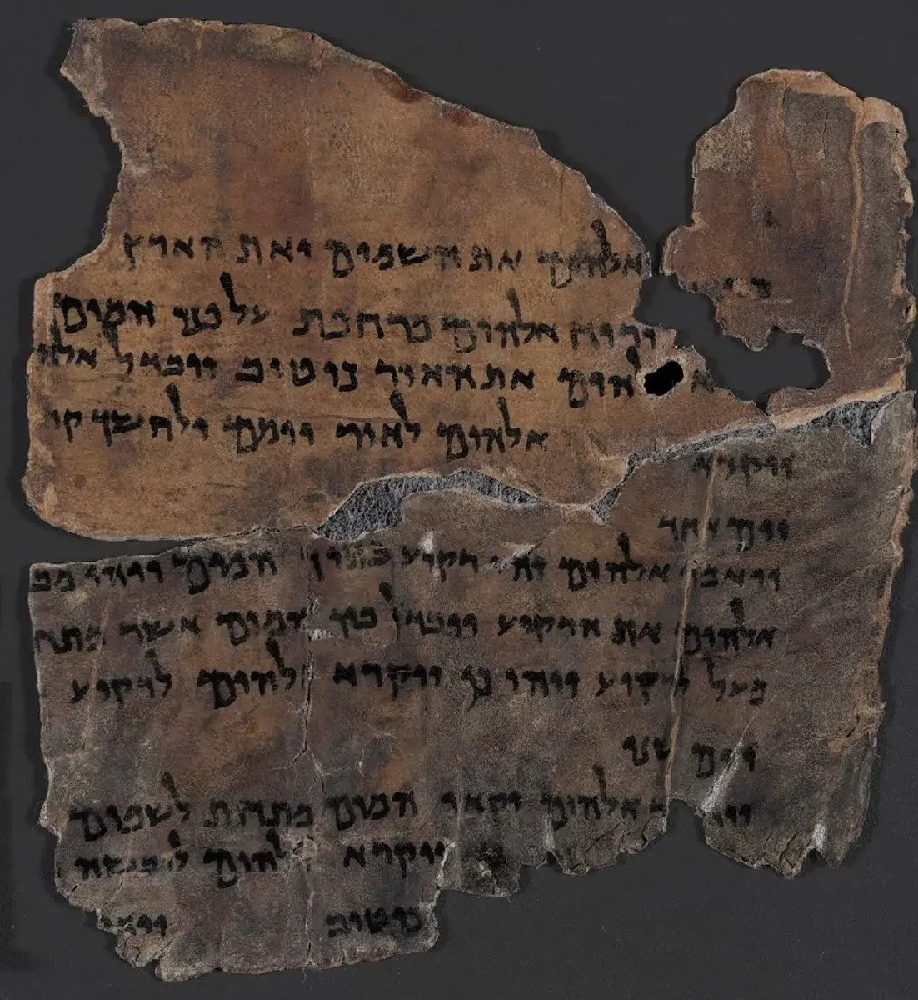
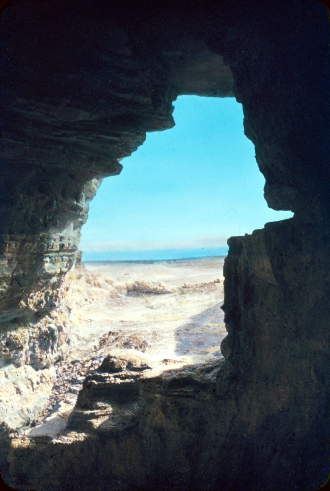
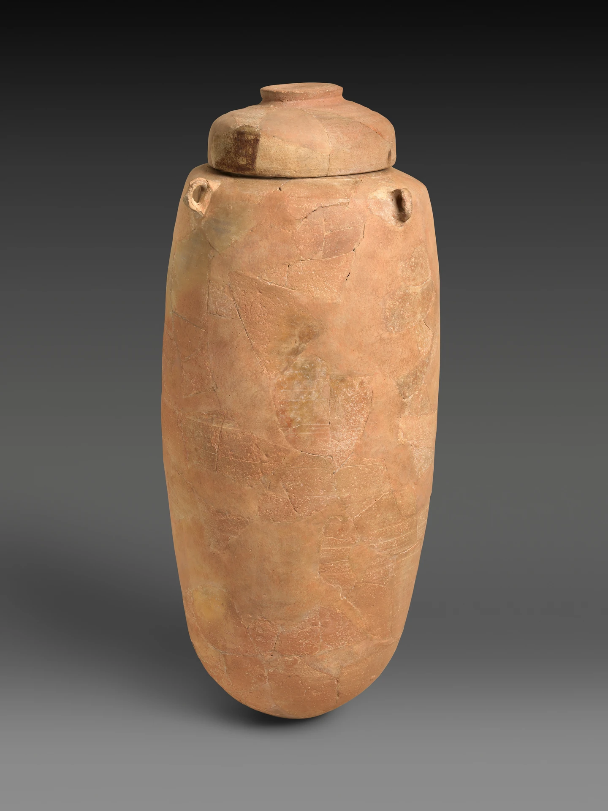
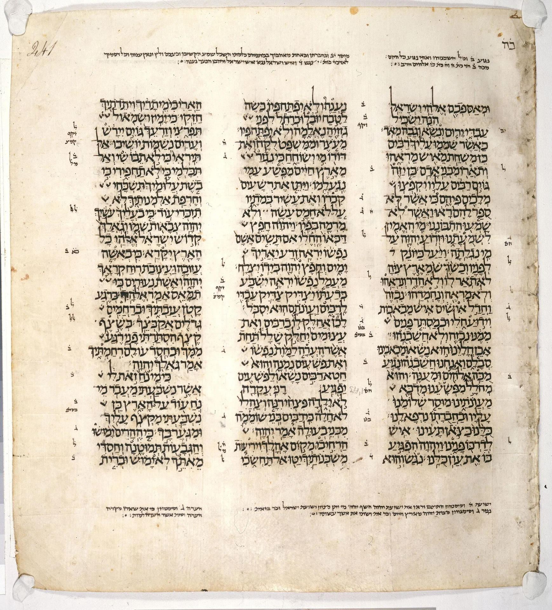
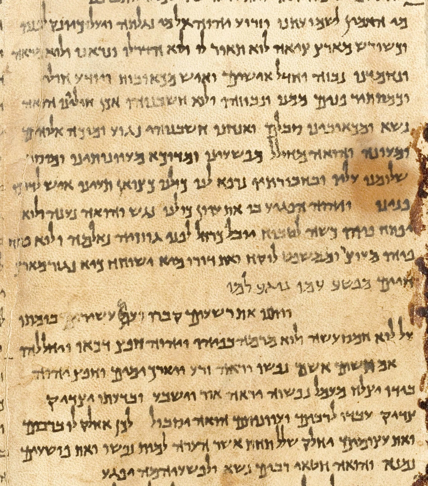
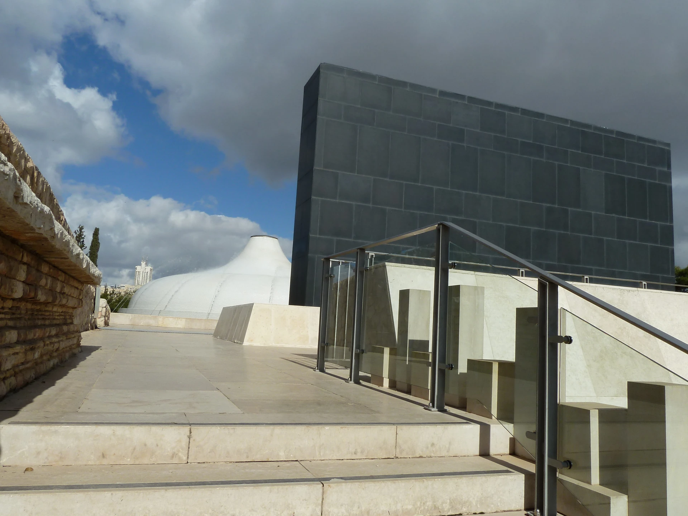

아직 펼치지 않은 카드가장 오래된 성경을 찾아서 · 1사해 사본1946년, 사해 근처 동굴에 들어간 베두인 목동들이 두루마리를 찾아냈어요. 이 발견으로 무엇이 천 년 넘게 앞당겨졌을까요?목동이 동굴에서 2천 년 전 두루마리를 찾았대!
1946~1947년 겨울사해 북서쪽 쿰란 · 하얀 절벽의 동굴
사해 사본
1946년에서 1947년으로 넘어가는 겨울, 사해 근처 동굴에서 2천 년 전 두루마리들이 나왔어요. 그 가운데 이사야서 한 권은, 천 년 뒤에 손으로 베낀 성경과 한 줄씩 견주어졌어요. 손잡이를 밀어 두 사본을 겹쳐 보세요.
옛날에 목동이 동굴 속 항아리에서 두루마리를 찾았대. 2천 년 전 성경이랑 천 년 전 성경을 겹쳐 보면 어떨까?
검수 전 시안이에요(기준서 1판). 발견 이야기는 이스라엘 고대유물청 디지털 도서관과 학자들의 정리를 따랐고, 사람마다 다르게 전하는 부분은 ‘기록마다 다른 점’에 모았어요. 상상은 ‘눈 감고 상상해 보기’에만 썼어요.
시안 확인용카드 단계 미리 보기
1
동굴에 던진 돌
사해(이스라엘과 요르단 사이의 소금 호수) 북서쪽, 하얀 절벽이 늘어선 쿰란. 1946년에서 1947년으로 넘어가던 겨울, 길 잃은 짐승을 찾던 베두인 목동이 절벽에서 동굴 하나를 보았어요. 베두인은 들과 사막을 옮겨 다니며 양과 염소를 치는 아랍 사람들이에요.
안이 보이지 않자 목동은 돌을 던져 넣었어요. 어둠 속에서 질그릇이 깨지는 소리가 났어요.

목동이 동굴에 돌을 던졌더니 ‘쨍그랑!’ 하고 그릇 깨지는 소리가 났대.
물어보기깜깜한 동굴에서 그런 소리가 나면 어떤 기분이 들까?
2
뚜껑 덮인 항아리
동굴 안에는 큰 질그릇 항아리들이 있었어요. 대부분 비어 있었지만, 뚜껑이 그대로 덮인 몇몇 항아리에서 옛 두루마리가 나왔어요. 어떤 두루마리는 아마포에 싸여 있었어요. 아마포(린넨)는 아마라는 풀의 실로 짠 천이에요.
목동들은 두루마리 세 개를 가방에 넣어 천막 기둥에 매달아 두었다고 해요. 그 가운데 하나가 이사야서(구약 성경의 한 책) 한 권 전체였어요.

두루마리는 베들레헴의 골동품 상인을 거쳐 예루살렘의 학자와 수도원으로 건너갔어요. 가방에 매단 세 개를 포함해, 이 첫 동굴(1동굴)에서 나온 두루마리는 모두 일곱 개였어요.
항아리 안에 두루마리가 있었대. 2천 년 동안 거기서 기다렸어!
물어보기옛날 사람들은 왜 소중한 글을 항아리에 넣어 두었을까?
3
천 년을 건넌 이사야서
이사야 두루마리는 양가죽 열일곱 장을 아마 실(린넨 실)로 이어 붙인 책이에요. 펼치면 7미터가 넘고, 세로로 나란히 쓴 글 칸 54단에 이사야서 1장부터 66장까지가 모두 들어 있어요. 학자들은 기원전 125년 무렵에 쓴 것으로 봐요.
이 두루마리가 나오기 전까지 가장 오래된 히브리어 이사야서는 그보다 천 년쯤 뒤에 베낀 중세 사본(손으로 베껴 쓴 책)들이었어요. 이 두루마리로, 우리가 가진 가장 오래된 히브리어 이사야서가 천 년쯤 더 옛날 것이 되었어요(JNS). 학자들은 두 글을 한 줄씩 견주어 보았어요. 아래에서 손잡이를 밀어 같은 53장을 겹쳐 보세요.
가운데 손잡이를 밀어 천 년 떨어진 두 이사야서를 겹쳐 보세요.


왼쪽 · 이사야 두루마리의 53장, 기원전 125년 무렵 · 사진: 아르돈 바르 하마(이스라엘 박물관) · 퍼블릭 도메인 · 위키미디어 공용
오른쪽 · 레닌그라드 사본 241쪽 앞면(이사야 52장 12절~54장 10절), 1008년 무렵 · 러시아 국립도서관 소장 · 퍼블릭 도메인 · 위키미디어 공용
두 쪽 모두 이사야 53장이에요. 1008년 사본에는 읽는 소리를 알려 주는 작은 점과 여백의 메모가 더해졌지만, 글자는 거의 같아요. 다만 11절에서 두루마리에는 ‘빛’이라는 낱말이 하나 더 있어요(아래 ‘더 찾아보기’의 ‘기록마다 다른 점’).
글은 놀랄 만큼 같았어요. 다른 곳은 대부분 철자 같은 작은 차이였어요. 손으로 베껴 전한 천 년이 얼마나 조심스러웠는지, 또 어디가 달라졌는지를 이 두루마리로 직접 볼 수 있게 되었어요.
2천 년 전 두루마리랑 천 년 전 책이야. 손잡이를 밀어서 비교해 보자!
물어보기천 년이나 떨어져 있는데 글이 거의 같다니, 어떻게 그럴 수 있었을까?
4
4동굴의 조각들
1952년, 쿰란 유적(옛 건물 터) 바로 앞 절벽의 넷째 동굴에서 수많은 조각이 나왔어요. 수백 가지 문서에서 나온 수천 조각이었어요.
1949년부터 1956년까지 학자들은 절벽의 동굴을 하나하나 살폈어요. 모두 열한 동굴에서 900가지가 넘는 문서가 나왔어요.

학자들은 수십 년 동안 작은 조각들을 맞추어 왔어요. 맨 위 앞면 카드의 창세기 1장 조각도 이 4동굴에서 나온 것이에요.
작은 조각이 수천 개! 퍼즐처럼 하나하나 맞췄대.
물어보기너라면 조각 맞추기를 어디서부터 시작할 거야?
5
항아리 뚜껑을 닮은 지붕
1965년, 예루살렘 이스라엘 박물관에 ‘책의 전당’이 문을 열었어요. 하얀 둥근 지붕은 두루마리가 나온 항아리의 뚜껑 모양을 본떴어요.
가운데 둥근 방에는 수십 년째 이사야 두루마리의 복제본(진짜를 본떠 새로 만든 것)이 펼쳐져 있어요. 진짜 두루마리는 보존을 위해 평소에는 조금씩만 꺼내 보여 줘요.

2026년, 박물관은 개관 60주년 기념 전시의 하나로 1968년 이후 처음으로 진짜 두루마리를 끝까지 펼쳐 넉 달 동안 보여 주었어요.
하얀 지붕이 항아리 뚜껑을 닮았대! 두루마리의 새 집이야.
물어보기우리 집 보물 상자를 만든다면 어떤 모양으로 할래?
눈 감고 상상해 보기
마른 바람이 하얀 절벽을 훑고 지나가요. 동굴 안으로 들어서면 갑자기 서늘하고 어두워요. 발밑에서 질그릇 조각이 달그락거리고, 오래 묵은 가죽 냄새가 코끝에 닿아요. 뚜껑을 들어 올리는 손이 조금 떨려요.
눈을 감아 봐. 밖은 햇빛이 눈부셔. 동굴 안은 서늘하고 깜깜해. 발밑에서 달그락! 항아리 뚜껑을 살짝 열어 볼까?
나의 자리
2천 년 동안 동굴 속에서 기다린 글처럼, 내가 오래 묻어 둔 말은 무엇인가요?
동굴에서 보물을 찾는다면 무엇이었으면 좋겠어?
마음에 닿는 한 줄을 고르거나 직접 써 보세요. 한 줄을 남기면 이 자리의 도장이 찍혀요. 이 기기에만 저장돼요.
더 깊이
이야기를 보다 궁금해질 만한 것들이에요. 답을 읽거나 짧은 영화로 보세요.
누가, 왜 두루마리를 항아리에 넣어 동굴에 두었을까요?
목동들이 찾은 두루마리는 어떻게 박물관까지 갔을까요?
뒷이야기
아직 펼치지 않은 이야기예요. 누르면 이야기가 펼쳐지고 색이 돌아와요. 더 알고 싶으면 근거를 따라가 보세요.
다 펼치면, 다음에 오실 때 새 이야기가 찾아와요.
오늘의 뒷이야기는 여기까지예요. 다음에 오시면 새 이야기가 기다리고 있어요.
펼친 뒷이야기 · 누르면 다시 볼 수 있어요
더 찾아보기
기록마다 다른 점
언제 찾았을까 카드 책 앞면은 1946년, 이스라엘 고대유물청 디지털 도서관은 1947년이라고 써요. 학자들의 정리에는 ‘1946년에서 1947년으로 넘어가는 겨울’이라고 적힌 것이 많아요. 목동들의 이야기도 말할 때마다 조금씩 달랐어요.
항아리 속 디지털 도서관은 뚜껑이 덮인 몇몇 항아리에 두루마리가 있었다고 쓰고, 한 연구 글(미첼, 2010)은 한 항아리에 초록빛으로 변한 아마포 꾸러미 넷이 있었다고 적었어요.
4동굴의 조각 수 디지털 도서관은 약 500가지 문서의 수천 조각, 미첼의 글은 약 600가지 문서의 1만 6천 조각이 넘는다고 적었어요. 세는 방법에 따라 숫자가 달라요.
누가, 왜 두었을까 많은 학자는 쿰란에 살던 유대인 공동체가 두었다고 보지만, 다른 유대인들이 로마 군대를 피해 숨겼다는 의견도 있어요. 낡은 두루마리를 묻어 두던 풍습이었을 수 있다는 설명도 있어요.
53장 11절의 ‘빛’ 쿰란에서 나온 이사야 사본 세 개에는 ‘그가 빛을 보고’라는 낱말이 있고, 그리스어 칠십인역에도 ‘빛’이 있어요. 1008년 사본 같은 중세 히브리어 사본에는 이 낱말이 없어요.
목동은 몇 명이었을까 디지털 도서관은 타아미레 부족의 한 목동이 돌을 던졌다고 쓰고, 사진 설명에 줌아와 무함마드 에드디브 두 이름을 적었어요. 미첼(2010)은 베들레헴에서 온 목동 셋이라고 적어요.
1008년 사본은 언제였을까 성서고고학회는 1008년으로, USC 서셈어 연구 프로젝트는 1010년으로 적어요.
두루마리와 함께 읽는 말씀
말씀은 뜻만 옮기고, 본문은 대한성서공회 개역개정으로 이어 드려요.
이사야 53장 많은 사람의 아픔을 대신 지고 고난받는 ‘종’의 노래예요. 이 카드에서 겹쳐 본 바로 그 장이에요.
사도행전 8장 32~35절 길 위에서 이사야 53장을 읽던 사람에게 빌립이 예수의 이야기를 전해요. 그리스도인들은 이 장을 예수의 고난과 함께 읽어 왔어요.
이사야 40장 8절 풀은 마르고 꽃은 시들어도, 하나님의 말씀은 영원히 선다는 말씀이에요.
직접 가 보기 · 집에서 보기
확인한 날 · 2026년 11월 18일 · 바뀌기 쉬운 정보라 정기적으로 다시 확인해요
사해 사본은 예루살렘 이스라엘 박물관의 ‘책의 전당’에 있어요. 진짜 두루마리를 꺼내는 전시는 드물고, 여는 때와 관람 방법이 자주 바뀌어요.
이스라엘과 중동은 상황이 자주 바뀌어요. 가시기 전에 박물관 누리집과 외교부 해외안전여행의 여행경보를 꼭 확인해 주세요.
집에서는 이스라엘 고대유물청의 디지털 도서관에서 조각 사진을 크게 볼 수 있어요.
천 년을 겹쳐 보기 금박
손잡이를 양쪽 끝까지 밀어 두 이사야서를 다 보면 카드에 금박이 입혀져요.
기원전 125년 무렵 두루마리와 1008년 무렵 사본을 끝까지 겹쳐 보기
아이와 함께 채색
아이와 함께 ‘영화처럼 보기’를 끝까지 보면 카드가 채색돼요.
아이와 함께 ‘영화처럼 보기’를 끝까지 보기
근거 보기 (27)
- 브리태니커 백과사전: Masoretic text — 모음을 적지 않던 글에 바른 소리를 위한 모음 기호, 절·낱말·글자 수를 세고 한가운데를 적어 바뀐 곳을 찾게 함, 이상한 철자·사본마다 다른 곳을 짚음, 6세기 무렵~10세기
- 브리태니커 백과사전: Dead Sea — 서남아시아, 이스라엘과 요르단 사이의 소금 호수, 땅 위에서 가장 낮은 호수
- 이스라엘 고대유물청 디지털 도서관: Introduction — 성경 두루마리 230가지쯤, 에스더서를 뺀 모든 책, 그 밖의 글들, 아람어 15%쯤, 구리판
- 이스라엘 고대유물청 디지털 도서관: Conservation — 동굴의 메마르고 고른 환경, 꺼낸 뒤의 손상(접착테이프, 검게 변함), 1991년부터 보존
- COJS: Discovery and Acquisition — 1954년 6월 1일 「월스트리트 저널」 광고(교육·종교 기관에 줄 선물), 강연 여행 중이던 수케닉의 아들 야딘, 중개인, 25만 달러(고츠먼의 도움), 비행기 넷에 하나씩, 책의 전당
- COJS: Shrine of the Book — 땅속 3분의 2, 둘레의 물, 검은 현무암 벽
- HMDB: 책의 전당 앞 안내판 — 하얀 지붕은 첫 두루마리가 나온 항아리 뚜껑을 닮음, 검은 벽과 ‘빛의 아들들’·‘어둠의 아들들’, 물은 깨끗함
- 바이블 게이트웨이: Isaiah 53:11(NIV) — ‘생명의 빛’, 각주의 사해 사본·칠십인역·마소라 본문
- 대한성서공회: 개역개정 이사야 53장 — 11절에 ‘빛’이 없음
- 텔아비브 대학교(2020년 6월 3일): 가죽의 옛 DNA로 맞춘 두루마리 퍼즐
- 스미소니언: 성경 박물관의 사해 사본 조각 16점이 모두 가짜(옛 신발 가죽, 틈에 고인 잉크)
- 성서고고학회(BAS): Fake Dead Sea Scrolls Exposed — 2020년 3월 13일, 16점 모두 요즘 만든 가짜
- USC 서셈어 연구 프로젝트: The Leningrad Codex — 책 꼴의 코덱스, 가장 오래된 히브리어 성경 전체, 1800년대 중반부터 러시아 국립도서관, 1990년의 도시 이름
- 성서고고학회(BAS) 그림 설명: Leningrad Codex — 1008년, 카이로의 사무엘 벤 야곱(맺음말 둘)
- 이스라엘 고대유물청 레온 레비 디지털 도서관: Discovery and Publication — 1947년, 돌을 던져 들은 소리, 뚜껑 덮인 항아리와 아마포, 일곱 두루마리, 4동굴 약 500문서, 열한 동굴 900여 문서, 1949~1956 조사 · 재벌: 타아미레 부족, 사진 설명의 줌아와 무함마드 에드디브, 값어치를 모름, 칸도 넷·살라히 셋, 사무엘 대주교(성 마가 수도원), 수케닉(1948), 1954년 광고와 수케닉의 아들 야딘, 처음 40년 학자 열두 명이 안 됨·1990년대 100명쯤·2001년
- Eric Mitchell, “A Brief History of the Dead Sea Scrolls”, Southwestern Journal of Theology 53.1(2010) — 1946/47년 겨울, 초록빛 아마포 꾸러미 넷, 천막 기둥 가방, 4동굴 1952년 8월, 1951년 말 발굴 · 재벌: 베들레헴에서 온 타아미레 목동 셋, 다친 자고새를 따라간 구멍과 4동굴
- JNS, 2026.2.27: Ancient words unrolled — 기원전 125년 무렵, 중세 사본보다 천 년쯤 앞섬, 17장·734cm, 복제본, 1965년 봉헌, 1968년 이후 첫 전체 전시, 넉 달
- COJS(앵커 성경 사전 발췌): The Isaiah Scroll — 양가죽 17장을 아마 실로 이음, 높이 26.2cm·길이 7.34m, 54단, 책의 전당 복제본
- 미국 의회도서관 전시: Qumran 유물 — 원통형 항아리, 1949년 1동굴 아마포 77점, 두루마리 싸개와 항아리 덮개, 숨긴 까닭에 대한 두 설명
- 메트로폴리탄 미술관: Dead Sea Scroll jar and lid(64.26a, b) — 기원전 2세기 무렵, 쿰란 1동굴, 높이 62cm
- 스커볼 박물관(HUC): Qumran Jar and Lid — 항아리와 뚜껑 모양이 책의 전당 건축에 영감을 줌
- Evangelical Textual Criticism, 2020: “He will see light” in Isaiah 53:11 — 1QIsaᵃ·1QIsaᵇ·4QIsaᵈ와 칠십인역의 ‘빛’
- Biblical Archaeology Society: Decayed papyrus hints that more Dead Sea Scrolls remain — 누가 두루마리를 두었는지에 대한 두 의견
- 위키미디어 공용: 레닌그라드 사본 241쪽 앞면 정보 — 이사야 52:12~54:10
- USC 서셈어 연구 프로젝트: Leningrad Codex — 지금 남은 가장 오래된 히브리어 성경 전체(1010년으로 적음)
- Edward J. Young, Christianity Today 1958.3.17: The Dead Sea Scroll of Isaiah — 마소라 본문과 놀랄 만큼 같음, 차이는 대부분 철자, 53:11 ‘빛’, 성경 한 권 전체로는 가장 오래된 사본
- Wikipedia: Isaiah Scroll — 길잡이(마소라 본문과 대체로 같고 차이는 철자·낱말 순서 등)
그림·사진·소리 출처
‘처음 만나는 기독교 문화’의 깊은 카드예요. 실제 인물의 사진은 쓰지 않았어요. 카드 단계와 남긴 글은 이 기기에만 저장돼요.